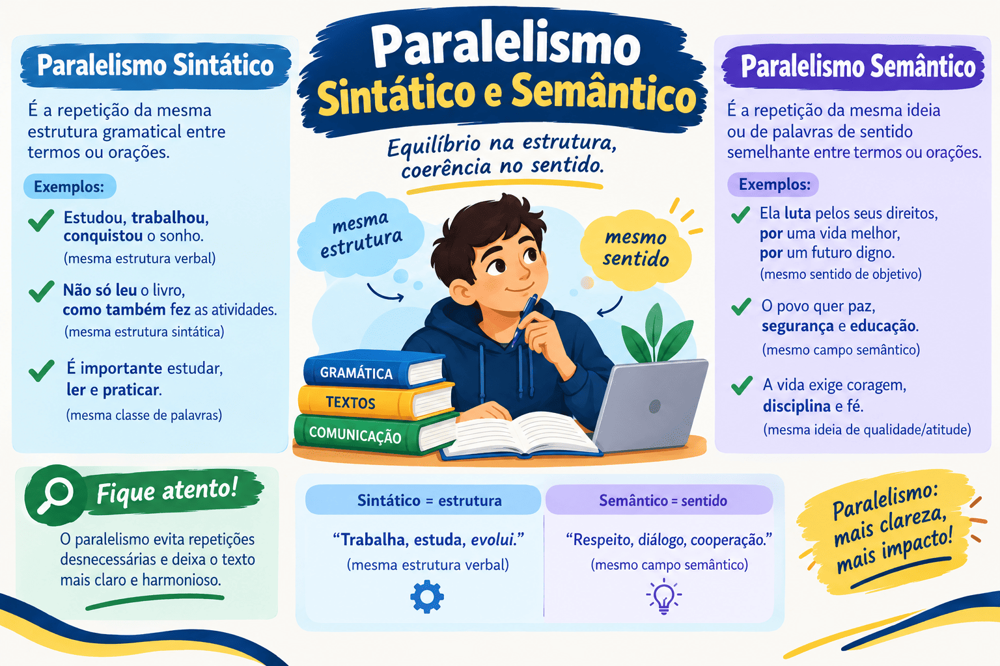

Paralelismo Sintático e Semântico: Regras, Exemplos e Aplicação na Redação
A clareza, a elegância e a fluidez de um texto dependem diretamente da harmonia com que suas partes são coordenadas. Na Língua Portuguesa, o paralelismo é o princípio gramatical e estilístico que estabelece simetria entre elementos que desempenham funções equivalentes em uma frase ou período, assegurando equilíbrio sintático e coerência lógica às ideias.
Em exames como a redação do ENEM e vestibulares tradicionais (como o PAES UEMA), a quebra de paralelismo é uma das falhas mais penalizadas na avaliação da estrutura sintática e da coesão textual. Coordenar termos com naturezas gramaticais distintas ou associar ideias semanticamente incompatíveis empobrece o estilo e compromete a progressão argumentativa.
Neste guia completo do Mestre Kira, você aprenderá o que é paralelismo sintático e semântico, reconhecerá as quebras mais frequentes em estruturas correlativas (como “não só... mas também”), verá como aplicar a simetria na tese da redação nota 1000 e testará seus conhecimentos com um quiz de 10 questões com gabarito comentado.

O que é paralelismo?
O paralelismo consiste na manutenção de uma mesma estrutura formal ou lógica para termos coordenados entre si. Se dois ou mais elementos desempenham papel idêntico na oração (como núcleos de um sujeito composto, complementos de um mesmo verbo ou orações coordenadas), eles devem ser apresentados sob a mesma forma gramatical e dentro de um campo de sentido compatível.
O princípio do paralelismo subdivide-se em duas dimensões complementares:
- Paralelismo Sintático: exige que termos coordenados compartilhem a mesma categoria gramatical (substantivo com substantivo, verbo no infinitivo com verbo no infinitivo, oração subordinada com oração subordinada);
- Paralelismo Semântico: exige compatibilidade lógica e coerência de sentido entre as ideias associadas dentro do mesmo eixo enunciativo.
Princípio da Simetria: Elementos sintaticamente equivalentes exigem formas gramaticais semelhantes. Quebrar essa simetria gera truncamento, estranheza e perda de fluidez na leitura.
Paralelismo Sintático
O paralelismo sintático manifesta-se quando elementos coordenados por conjunções aditivas, alternativas ou correlativas mantêm rigorosa igualdade de forma mórfica.
Estrutura com substantivos:
O governo prometeu investimentos em saúde e melhorias no transporte.
- investimentos: substantivo abstrato;
- melhorias: substantivo abstrato;
- harmonia: ambos os termos coordenados são substantivos regidos pelo mesmo verbo.
Estrutura com verbos no infinitivo:
O projeto visa reduzir os custos e otimizar os processos produtivos.
- reduzir: verbo no infinitivo;
- otimizar: verbo no infinitivo;
- harmonia: simetria perfeita entre as duas ações complementares.
Quebras clássicas de paralelismo sintático
A quebra de paralelismo ocorre quando o redator mistura classes de palavras ou formatos sintáticos diferentes para desempenhar a mesma função:
1. Mistura de substantivo com verbo no infinitivo
Um dos erros mais comuns consiste em coordenar um nome com uma oração verbal:
Com quebra de paralelismo (inadequado)
O plano prevê a contenção de gastos e ampliar as receitas.
Mistura de substantivo (“a contenção”) com verbo no infinitivo (“ampliar”).
Paralelismo corrigido (adequado)
O plano prevê a contenção de gastos e a ampliação das receitas.
Ou: O plano prevê conter gastos e ampliar receitas.
2. Quebra nas estruturas correlativas
Expressões correlativas como “não só... mas também”, “tanto... quanto”, “seja... seja” e “ou... ou” exigem que o termo posicionado imediatamente após o primeiro conector tenha a mesma natureza daquele colocado após o segundo conector:
Não só + [Elemento A] + mas também + [Elemento B]
O Elemento A e o Elemento B devem ter a mesma forma gramatical.
Com quebra de paralelismo
O curso busca não só a qualificação profissional, mas também promover a cidadania.
Após o primeiro conector há um substantivo; após o segundo, há uma oração verbal.
Paralelismo restaurado
O curso busca não só a qualificação profissional, mas também a promoção da cidadania.
Ou: O curso busca não só qualificar profissionalmente, mas também promover a cidadania.
3. Quebra na coordenação de orações subordinadas
Ao coordenar duas orações subordinadas adjetivas ou substantivas, deve-se preservar a conjunção ou o pronome relativo em ambas:
Inadequado: Este é o livro que li no ano passado e achei interessante.
Adequado: Este é o livro que li no ano passado e que achei interessante.
A repetição do pronome relativo garante a simetria sintática das orações adjetivas coordenadas.
4. Quebra de preposições em regências associadas
É gramaticalmente condenável coordenar dois verbos com regências diferentes compartilhando um único complemento preposicionado:
Erro frequente: *“Ele entrou e saiu da sala.” → Quem entra, entra em algum lugar; quem sai, sai de algum lugar. O correto pela norma culta é: “Ele entrou na sala e saiu dela.”
Paralelismo Semântico
O paralelismo semântico diz respeito à compatibilidade lógica entre as ideias coordenadas. Os termos reunidos sob a mesma conjunção devem pertencer a universos de discurso coerentes e comparáveis.
Quebra de paralelismo semântico
No assalto, o homem perdeu o relógio e a paciência.
Coordena um objeto físico concreto com um estado emocional abstrato.
Paralelismo semântico mantido
No assalto, o homem perdeu o relógio e a carteira.
Ambos os termos são bens materiais concretos do mesmo campo semântico.
Atenção ao estilo literário: Na literatura, a quebra proposital de paralelismo semântico é uma figura de linguagem sofisticada chamada zeugma estilístico ou efeito humorístico/irônico. Um dos exemplos mais célebres da literatura brasileira está em Machado de Assis (em Memórias Póstumas de Brás Cubas): “Marcela amou-me durante quinze meses e onze contos de réis.” Em redações dissertativas formais, contudo, esse tipo de quebra é considerado incoerência e acarreta perda de nota!
Quadro Comparativo: Quebra vs. Paralelismo Perfeito
| Tipo de Estrutura | Com Quebra de Paralelismo | Construção Paralela e Elegante |
|---|---|---|
| Substantivo vs. Verbo | Desejamos a aprovação e conquistar o cargo. | Desejamos a aprovação e a conquista do cargo. |
| Correlativas aditivas | Ele não só estuda, mas também trabalho intenso. | Ele não só estuda, mas também trabalha intensamente. |
| Preposições em série | Falou de política, sobre economia e futebol. | Falou de política, de economia e de futebol. |
| Tempos verbais | Se você estudar, conseguia a vaga. | Se você estudar, conseguirá a vaga. |
| Semântico | Comprou o carro e a desilusão. | Comprou o carro e o seguro. |
O Paralelismo na Redação do ENEM e Vestibulares
Em exames dissertativos, o paralelismo é avaliado em critérios rigorosos:
1. Na formulação da tese (Introdução)
Ao apresentar os dois argumentos condutores na introdução (D1 e D2), utilize estruturas paralelas para evidenciar o projeto de texto estratégico:
Tese paralela e coesa:
“Nesse contexto, faz-se imperioso analisar não apenas a negligência estatal diante do problema, mas também a passividade da sociedade civil perante a crise.”
Dois substantivos abstratos determinados por artigo e seguidos de adjunto adnominal adjetivo.
2. Na proposta de intervenção (Conclusão)
Ao articular ações de múltiplos agentes sociais, preserve a simetria verbal:
“Cabe ao Ministério da Educação promover palestras formativas e disponibilizar materiais pedagógicos acessíveis às escolas públicas.”
Dois verbos no infinitivo coordenados com seus respectivos complementos nominais.
Como revisar o paralelismo no seu próprio texto?
- Localize as conjunções coordenativas: Encontre conectivos como e, ou, mas também, quanto, nem.
-
Analise os termos à esquerda e à direita: Compare o elemento anterior com o posterior:
- Se o primeiro é um verbo no gerúndio, o segundo também deve ser gerúndio;
- Se o primeiro é introduzido pela preposição a, o segundo também deve vir preposicionado;
- Se o primeiro é um substantivo, o segundo não pode ser uma oração desenvolvida.
- Verifique a concordância temporal dos verbos: Certifique-se de que orações coordenadas ou correlatas mantêm correlação harmoniosa de tempo e modo.
- Avalie a compatibilidade lógica: Certifique-se de que os elementos coordenados compartilham o mesmo campo de realidade (evite misturar coisas abstratas e concretas no mesmo nível).
Quiz — Paralelismo Sintático e Semântico
Questão 1 — Assinale a oração que atende plenamente ao princípio do paralelismo sintático:
Questão 2 — Em “Marcela amou-me durante quinze meses e onze contos de réis” (Machado de Assis), ocorre uma:
Questão 3 — Assinale a alternativa que apresenta quebra de paralelismo sintático em estrutura correlativa:
Questão 4 — Observe: “O candidato precisa demonstrar preparo técnico, equilíbrio emocional e ter capacidade de liderança”. A reformulação que restabelece o paralelismo é:
Questão 5 — Em qual das frases há perfeita manutenção do paralelismo preposicional?
Questão 6 — A frase “Gostei e recomendei o livro aos meus amigos” apresenta falha sintática porque:
Questão 7 — Identifique a sentença com quebra de paralelismo semântico NÃO justificada por estilo literário:
Questão 8 — Em “Exige-se dos funcionários pontualidade, disciplina e que usem o uniforme completo”, o erro consiste em:
Questão 9 — Para corrigir a frase da questão anterior mantendo o paralelismo com substantivos, deve-se escrever:
Questão 10 — Qual das opções apresenta correlação verbal e paralelismo temporal adequados?
Resumo sobre paralelismo sintático e semântico
- O paralelismo estabelece simetria formal e lógica entre termos coordenados de idêntica função sintática.
- No paralelismo sintático, termos em coordenação devem compartilhar a mesma classe gramatical (substantivo com substantivo, infinitivo com infinitivo).
- No paralelismo semântico, as ideias coordenadas devem pertencer a campos de sentido compatíveis e comparáveis.
- Evite misturar nomes com orações em listas e enumerações (ex.: *“busca a redução e otimizar”* → use reduzir e otimizar).
- Em estruturas correlativas (não só... mas também, tanto... quanto), os elementos que sucedem os conectores devem ter rigorosamente a mesma forma gramatical.
- Verbos de regências diferentes não devem compartilhar o mesmo complemento (ex.: *“entrou e saiu da sala”* → use entrou na sala e saiu dela).
- Preserve a simetria de preposições em enumerações subordinadas a um mesmo termo.
- Mantenha a correlação temporal e modal harmoniosa nas orações coordenadas e condicionais.
- Na redação do ENEM e PAES UEMA, o paralelismo é decisivo para a nota da Competência 1 (norma culta e estrutura sintática) e da Competência 4 (coesão).
Conclusão
O domínio do paralelismo sintático e semântico eleva a maturidade discursiva do estudante, transformando períodos truncados em estruturas equilibradas, claras e agradáveis de ler. Longe de ser um preciosismo estilístico, a simetria sintática reflete o rigor lógico do pensamento e a capacidade de articular ideias de forma ordenada.
Nas provas de redação do ENEM, do PAES UEMA e de concursos concorridos, a aplicação consistente do paralelismo na apresentação da tese, no desenvolvimento argumentativo e nas propostas de intervenção diferencia os textos comuns das redações de nota máxima.
Perguntas frequentes sobre paralelismo
O que é quebra de paralelismo sintático?
É a falha estrutural que ocorre quando se unem por coordenação termos ou orações de naturezas gramaticais diferentes, como misturar um substantivo com um verbo no infinitivo (ex.: *“o projeto prevê o apoio aos jovens e qualificar adultos”*).
Qual a diferença entre paralelismo sintático e semântico?
O paralelismo sintático refere-se à igualdade da forma e das classes gramaticais dos elementos coordenados. O paralelismo semântico diz respeito à coerência lógica e de significado entre os conceitos reunidos no mesmo enunciado.
Como aplicar o paralelismo na introdução da redação?
Ao elencar os dois argumentos principais que sustentam a sua tese, use termos com a mesma estrutura sintática. Por exemplo: coordenar dois substantivos abstratos especificados por adjuntos adnominais (“a omissão estatal e a indiferença social”).
A quebra de paralelismo sempre é considerada erro gramatical?
Em textos dissertativos formais e acadêmicos, sim, pois acarreta truncamento e incoerência. Na literatura ou em textos publicitários, contudo, a quebra intencional de paralelismo semântico é uma figura de linguagem válida (zeugma ou efeito de humor/ironia).
Como manter o paralelismo com "não só... mas também"?
Certifique-se de que a estrutura gramatical que vem logo após “não só” seja idêntica à que vem após “mas também”. Se usar verbo no infinitivo após o primeiro conector, deve obrigatoriamente usar verbo no infinitivo após o segundo.
Conteúdos relacionados
- Termos Integrantes e Acessórios da Oração
- Orações Coordenadas e Subordinadas: como reconhecer e classificar
- Conjunções da Língua Portuguesa: o que são, tipos, usos e exemplos explicados
- Locuções Adverbiais: o que são, tipos e exemplos
- Sintaxe: estrutura da oração e relações entre as palavras
- Interpretação e Produção Textual
- Gramática da Língua Portuguesa: Guia Completo
- Conteúdos de Gramática — Página 2
- Conteúdos de Gramática — Página 3
- Conteúdos de Gramática — Página 4
Referências bibliográficas
- BECHARA, Evanildo. Moderna Gramática Portuguesa. 37. ed. Rio de Janeiro: Nova Fronteira, 2009.
- CEGALLA, Domingos Paschoal. Novíssima Gramática da Língua Portuguesa. 48. ed. São Paulo: Companhia Editora Nacional, 2008.
- CUNHA, Celso; CINTRA, Lindley. Nova Gramática do Português Contemporâneo. 6. ed. Rio de Janeiro: Lexikon, 2013.
- GARCIA, Othon Moacyr. Comunicação em Prosa Moderna. 27. ed. Rio de Janeiro: Editora FGV, 2010.
- ROCHA LIMA, Carlos Henrique da. Gramática Normativa da Língua Portuguesa. 49. ed. Rio de Janeiro: José Olympio, 2011.
Explore Outros Conteúdos
Continue seus estudos acessando outras seções do site Mestre Kira: